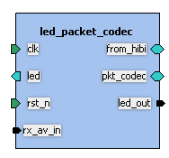

Ports editor
Ports editor provides a table containing all the ports of
a component. This editor is used to add, remove and edit the
ports.
Each port has 5 mandatory parameters. Port name is a
uniques identifier and must match the name of the port in the
implementation language. For example, the ports listed in the
VHDL entity declaration are listed here.
Direction has four options:
- in for input ports.
- out for output ports.
- inout for bidirectional and tri-state
ports.
- phantom for ports that exist on the IP-XACT
component but not on the implementation.
Left and right bounds define the indices of a
vectored port. The width of the port is left bound -
right bound + 1, e.g. 3 downto 0 requires 4 bits. In case of
scalar ports the left bound = right bound.
The port type is optional. Typical values In VHDL are
'std_logic' for scalar ports (i.e. 1 bit) and and
'std_logic_vector' for vectored ones (multibit). The type
definition is a language specific reference to where the
type is defined, e.g. package or header file. Type definition
will be included at the beginnig of the generated top-level
code. In VHDL, 'std_logic' types are defined in
'IEEE.std_logic_1164.all' ('all' means that the whole package is
included). In SystemC, the type definition is the include file
name, e.g. 'systemc.h'.
Default value is useful since it assigns a value for an
unconnected (input) port. This is used, for example, when
generating a structural top-level VHDL for the hierarchical
component where some input ports are not connected any other
port in the design. Textual description is also optional.
Ad-hoc column is a Kactus2-specific extension which is used
in the graphical user interface of a hierarchical design.


The component instances are
drawn as rectangles and their external interfaces are drawn to
the edges of the rectangle. There are different symbols for
different directions. The example instance in figure has 5
bus interfaces: clk, led, rst_n, from_hibi and
pkt_codec. Each interface includes 1 or multiple ports, and the
interface definition has its own VLNV. Moreover, user can select
that some ports are shown as Ad-hoc, e.g. if they are not
necessarily associated in any bus interface. Example figure
displays 2 ad-hoc ports: rx_av_in and led_out.
Ports editor provides a context menu (right mouse button) that
contains following options:
- Add new port (Add row)
- Remove port (Remove row)
- Clear the selected cells
- Copy the contents of the selected cells to clipboard
- Paste the contents of the clipboard to the selected cells
- Import a csv-file to the editor
- Export the contents of the editor to a csv-file